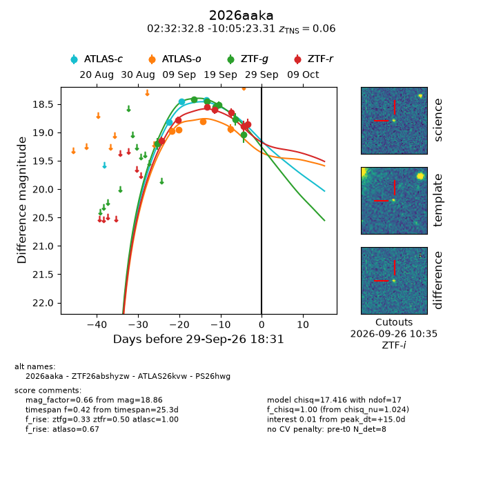
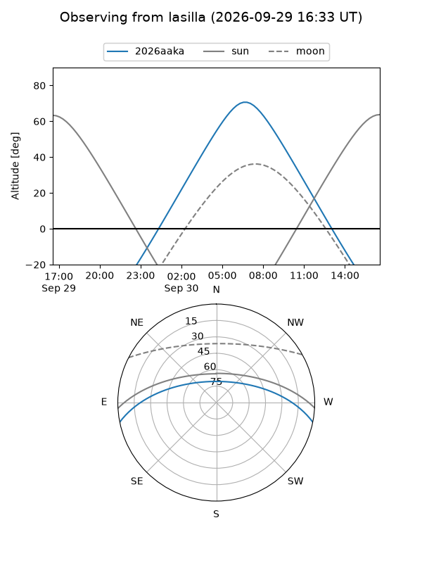
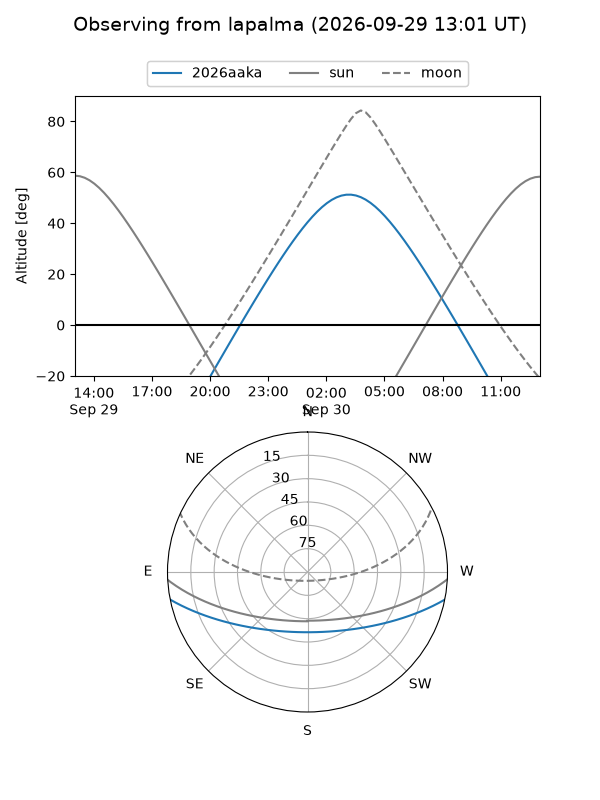
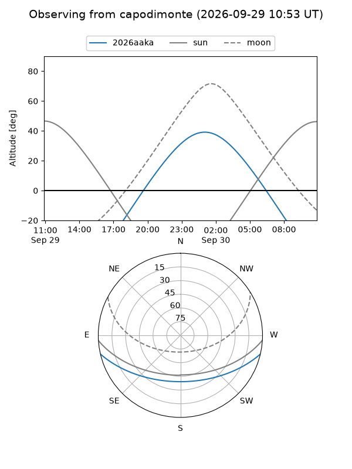
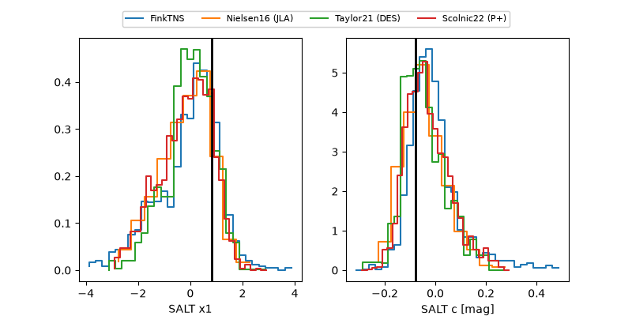

2026aaka
Target 2026aaka at 2026-09-29 18:33
Aliases and brokers:
FINK-ZTF: ztf.fink-portal.org/ZTF26abshyzw
Lasair-ZTF: lasair-ztf.lsst.ac.uk/objects/ZTF26abshyzw
ALeRCE-ZTF: alerce.online/object/ZTF26abshyzw
YSE-PZ: ziggy.ucolick.org/yse/transient_detail/2026aaka
TNS name: wis-tns.org/object/2026aaka
Direct TNS query: direct search
alt names
ZTF26abshyzw (ztf,fink_ztf)
2026aaka (tns,yse)
ATLAS26kvw (atlas)
PS26hwg (panstarrs)
Coordinates:
equatorial (ra, dec) = 38.1367,-10.08981
equatorial (HMS+DMS) = 02:32:32.80,-10:05:23.31
galactic (l, b) = (182.1899,-60.71673)
Flags:
TNS type: SN Ia
TNS redshift: 0.0600
peak dt: +15.0
Photometry:
last atlasc=18.43, atlaso=18.94, ztfg=19.04, ztfr=18.86
3 atlasc, 4 atlaso, 7 ztfg, 7 ztfr detections
Lightcurve

Visibility



Additional plots
